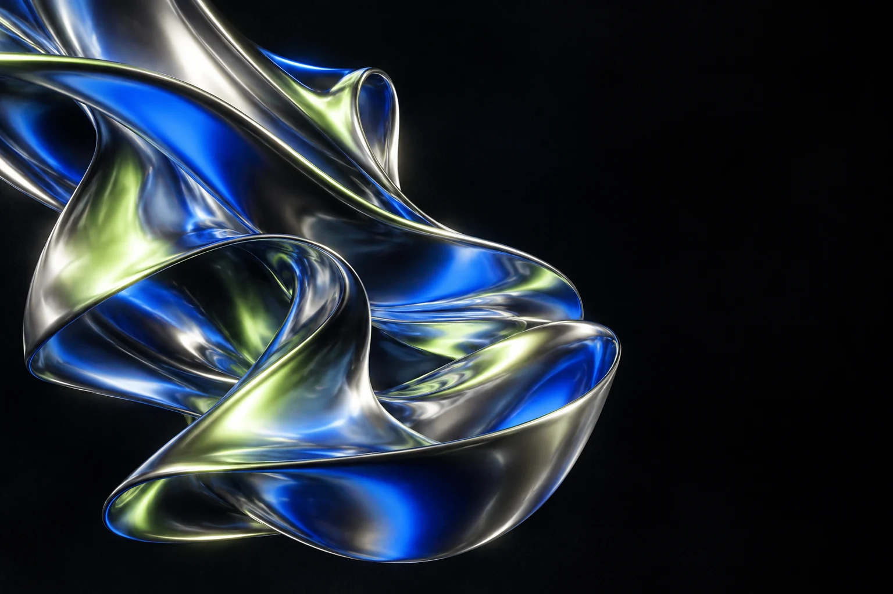

Film / Documentary
REAL
STORIES.
جای نمایش ویدیوی مستندSTORIES.
روایتِ واقعیت
ساخت و تدوین مستند با تیم فیلمبرداری

مهدی خرسند / Graphic Designer & AI Artist
طراحی گرافیک، تدوین و خلق تصویر با هوش مصنوعی.
از یک تامنیل تا یک روایت سینمایی.
من مهدی خرسند هستم؛ گرافیست و AI Artist. با تصویر ثابت و متحرک کار میکنم؛ از طراحی پوستر، پست سوشال مدیا و تامنیل یوتیوب تا تدوین مستند و ساخت تیزرهای هوش مصنوعی.
تجربهام هم پشت میز طراحی شکل گرفته، هم در همکاری با تیم فیلمبرداری. فتوشاپ، پریمیر، افتر افکت و ابزارهای هوش مصنوعی، بخشی از مسیر تبدیل ایدههایم به تصویرند.
تصویر ثابت، روایت مستند
و تجربههای تازه با AI.
ساخت و تدوین مستند با تیم فیلمبرداری
طراحی پوستر و ترکیببندی گرافیکی
طراحی تامنیل برای ویدیوهای یوتیوب
ساخت تیزرهای تصویری با هوش مصنوعی
نمونهکارهای واقعی به این بخش اضافه میشوند؛ قابهای بالا فعلاً برای معرفی حوزههای کاری هستند.
حوزههایی که در آنها کار کردهام.
طراحی تامنیل یوتیوب، پوستر و پستهای شبکههای اجتماعی؛ کار با ترکیببندی، تصویر و تایپوگرافی.
Adobe Photoshopهمکاری با تیم فیلمبرداری در ساخت ویدیوهای مستند و تدوین روایت تصویری.
Adobe Premiere Pro / After Effectsخلق تصویر و ساخت ویدیوهای تیزر با ابزارهای هوش مصنوعی، در کنار طراحی و تدوین.
AI image & video toolsابزارهای کار من